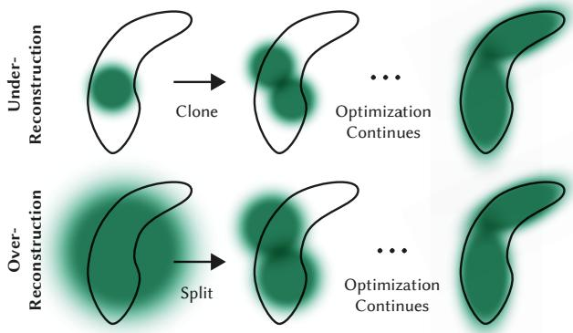
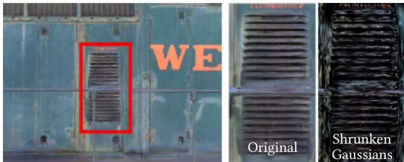
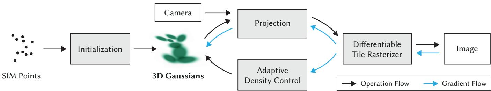

阶段 F · 前沿：神经隐式与 3D 高斯 / Lesson 0116
3DGS 原著（2023）：可微光栅化与自适应密度控制
这一节要还一笔挂了五季的债——「自适应密度控制」到底是怎么做的 。而答案会有点反直觉 🫧
🎯 主题：3D 高斯参数化 · 瓦片光栅化 · 密度控制
👥 作者：Bernhard Kerbl · Georgios Kopanas · Thomas Leimkühler · George Drettakis
📅 2023 · 3D Gaussian Splatting for Real-Time Radiance Field Rendering （SIGGRAPH 2023）
本节目标
读完你应该能：① 说出 3DGS 相对 NeRF 的根本差别在哪一步 ；② 完整讲出从三维高斯到屏幕上一个像素 的流程；③ 准确说出自适应密度控制的三条规则 （尤其克隆与分裂分别在什么条件下触发）；④ 解释为什么要"周期性地把不透明度压回零"。
和前面课程怎么接
这一节是全季的枢纽 。往前接：第一季 0015 课 （3D 高斯综述，其中明确写过「综述只引用、未展开『自适应密度控制』」——那笔债本节还清）、第二季 0039 课 （Plenoxels 的结论「NeRF 里真正不可省的不是网络而是可微渲染器」）、第二季 0036 课 （NeRF 每条光线约 128 个采样点）。往后接：本季剩下 10 节高斯课，全都在改这一节讲的某一条规则。
1. 它要解决什么：NeRF 的两难
先把靶子立清楚。第二季 0036–0039 学过的那些方法，处境是这样的：
Mip-NeRF360（质量最好）
画面质量是当时的巅峰，但训练与渲染时间都极高 。
Instant NGP / Plenoxels（快）
训练压到了分钟级，但原文也承认：它们难以有效表示空白空间 、图像质量受加速用的结构化网格 限制、而渲染速度又受"每条光线要查询大量采样点"拖累。
共同的天花板
原文摘要直接下了判断：对于无界且完整的场景 （不是孤立物体）、在 1080p 分辨率下，当时没有任何方法能达到实时显示速率 。
而 3DGS 的摘要承诺了三件事同时成立：画质达到当时最好水平 、训练时间有竞争力 、1080p 下 ≥ 30 fps 实时渲染 。
它是怎么做到的？原文摘要里概括成 three key elements （三个关键要素）：
⚠️ 一处必须说清的事实： 你可能在别处看到过"3DGS = ①初始化 / ②投影与可微光栅化 / ③自适应密度控制"这样的三分法。原文的分节并不是这样 ——它真正的章节是 §4 可微 3D 高斯、§5 优化与自适应密度控制、§6 快速可微光栅化器、§7 实现与实验。那个"三步"是后续课程常用的教学归纳。 我在这里沿用摘要的"三个关键要素"口径，并把这个区别告诉你，免得你回原文时找不到对应章节。
2. 从「点」到「椭球」：为什么不是点？
原文在讲自己的方法之前，先花了一段讲前人的"点渲染"。它提到一条更早的思路（Xu 等人的工作）：用点来表示辐射场 ，配合径向基函数、并在优化过程中用点剪枝与稠密化。但那种做法仍依赖体渲染的 ray marching，所以达不到实时显示速率。
这里的关键词是ray marching（光线步进） 。回忆第二季 0036 课讲过的：NeRF 渲染一个像素，要沿光线取上百个点、每个点都跑一遍网络问"这里有多密、什么颜色"，然后按透明度累加。一个点都不少，一次都不能省。
3DGS 的换法很直接：别沿光线采点去问网络了，直接把三维场景里的小团块「泼」到屏幕上看。 这就是名字里的 Splatting （泼溅）。而"小团块"不能是球——真实的表面有朝向，球是各向同性的，没法表达"一片薄的墙面"。所以选各向异性的三维高斯 ：一个可以被拉长、压扁、旋转的椭球。
① NeRF 的做法：沿一条光线，一路问下去
相机
每个点都要跑一遍网络
≈ 上百次查询 / 每个像素
表面
② 3DGS 的做法：把三维椭球直接「泼」到屏幕上，按顺序叠
相机
每个椭球投影成一小片，按深度顺序叠加 —— 不用沿光线采样
同一个像素，两条完全不同的路
这张图在画什么： 上面一格是 NeRF 的路子：一条光线射出去，沿线上取上百个点，每个点都要跑一遍网络 问"这里多密、什么颜色"，再按透明度累加。下面一格是 3DGS 的路子：场景里本来就存着一堆椭球，把每个椭球投影 到屏幕上变成一小片，然后按深度顺序叠加 出像素。怎么看这张图： ① 盯住上格的那排红点 ——那是"每个像素都要做的上百次网络查询"，是 NeRF 慢的根源。② 盯住下格那三根虚线投影 ——它把"三维椭球"变成"屏幕上一小片"，这一步是解析几何 ，不需要网络参与。③ 注意下格底部那条像素条 ：颜色是一段段叠出来的，不是一次性算出来的——这就是接下来要讲的 α 混合。要记住的一句话： 3DGS 快的根本原因不是"网络更小"，而是把"沿光线逐个查询"换成了"整块投影 + 排序叠加" ——后者在 GPU 上便宜得多。
3. 参数化：一个高斯存哪些数？
要"泼"一个椭球，得先定义它。一个三维高斯分布由均值与协方差完全决定：
为什么协方差不能直接当六个自由数去优化
一个三阶对称矩阵有 6 个独立参数。理论上你可以直接把这 6 个数交给优化器。但原文没有这么做 ，而是把它分解成旋转 与缩放 ：
这样做的理由很实在：直接优化 6 个数，很容易优化出"不是一个合法协方差矩阵"的东西 （合法协方差必须是半正定 的）。而写成 $R S S^{\!\top} R^{\!\top}$ 之后，无论 $R$ 和 $S$ 取什么值，乘积一定是半正定的 ——不需要额外加约束，从构造上就保证了合法性。
这条思想你其实已经见过。 第二季 0028 课讲 MSCKF 时，姿态误差用"3 维最小表示"而不是四元数的 4 个分量，理由是"否则协方差矩阵奇异"；第二季 0019 课讲 BA 参数化时，原话说参数化要"在当前估计附近尽量均匀、有限、行为良好"。3DGS 这里做的是同一件事：换一套参数化，让优化在几何上合法 。
除了这三样（位置、协方差、不透明度），每个高斯还存颜色 ——注意颜色不是简单的 RGB 三个数，而是球谐（SH）系数 ，因为同一个表面从不同角度看亮度不同。
位置 $\boldsymbol{\mu}$ 3 个数。椭球中心在哪。
协方差 $\Sigma$ 由四元数（4 个数）与缩放（3 个数）合成。椭球多长多扁、朝哪。
不透明度 $\alpha$ 1 个数。用 sigmoid 激活限制在 $[0,1)$ 以获得平滑梯度。
颜色（球谐） 约 48 个数。让颜色可以随视角变化——这是"镜面感"的来源。
球谐这个工具你也不陌生 ：第二季 0039 课的 Plenoxels 就是"显式体素 + 球谐"，用它来表示方向相关的颜色。3DGS 把同一件工具挂到了椭球上。
4. 投影到屏幕：怎么把一个三维椭球画成一小片
要把椭球"泼"到图像上，得算出它在图像平面上的形状。原文的做法是把三维协方差用一阶线性化搬到二维：
为什么需要 Jacobian？ 因为"把三维点投到图像上"这件事是非线性的 （要除以深度）。非线性变换不能直接作用在协方差上，得先用它的一阶导数（也就是 Jacobian）做线性近似。这是标准的误差传播做法，和第二季 0028 课 MSCKF 里用 Jacobian 把误差从一个坐标系搬到另一个坐标系是同一套数学。
还有一个细节值得记：只有落在视锥内的椭球才值得投 。原文用了一个保守判据——只保留99% 置信区间与视锥相交 的高斯；另外还用一个"guard band"直接扔掉那些均值贴近近平面、又远在视锥之外的高斯，理由是算它们的二维投影协方差不稳定 （除以一个接近零的深度，数值会炸）。
5. 渲染流程：16×16 瓦片与「只排一次序」
这是 3DGS 工程上最漂亮的部分。原文给这一节起的标题是 Fast Differentiable Rasterizer for Gaussians 。目标有三个 ：渲染要快、排序要快、而且不要限制"能参与混合的图元数量" （前人工作有这个硬限制）。
5.1 七步流程
切瓦片 ：把屏幕分成 16×16 像素 的小块（tile）。剔除 ：扔掉落在视锥外的高斯（用 99% 置信区间判据），外加 guard band 扔掉极端位置的那些。实例化 + 编 key ：一个高斯可能压到好几个瓦片上，那就为它按覆盖的瓦片数量生成多个实例 ；每个实例配一个 key，key 由视角空间深度 + 瓦片 ID 拼成。只排一次序 ：用单次快速的 GPU 基数排序 （radix sort）把所有 key 排好。每个瓦片一个 thread block ：协作地把相关的高斯包读进 shared memory；对每个像素从前到后 遍历，累积颜色与 $\alpha$。唯一停止条件就是 $\alpha$ 饱和 ：某个像素的 $\alpha$ 累积到接近 1 就停；一个瓦片里所有像素都饱和，整块就结束。反向传播 ：见 5.3。
从三维椭球到像素颜色：五步，以及「只排一次序」这件事
① 投影
三维椭球 → 二维椭圆
② 切 16×16 瓦片
每块 16×16 像素
③ 编 key 并排序
深度 2.3 ｜ 瓦片 07
深度 1.1 ｜ 瓦片 03
深度 4.7 ｜ 瓦片 11
深度 0.8 ｜ 瓦片 01
一次基数排序搞定全部
★ 没有逐像素排序
④ 每瓦片一队线程 ⑤ 从前到后叠加
线程块装载高斯包 → 共享内存
按深度依次累加颜色与不透明度
不透明度积到 1 就停
（不限制参与混合的高斯个数）
★ 第 ③ 步里"只排一次序"意味着什么？
排序只在"瓦片"这一级做（同一个瓦片内按深度排）。原文原话：没有任何额外的逐像素排序 ，混合就基于这一次初始排序。
后果：α 混合在某些配置下是近似的 。原文说当泼溅块接近单像素大小时近似可忽略，且在收敛的场景里看不到可见伪影。
这个近似后来被别人盯上了
相邻瓦片之间只保证"瓦片内有序"，所以从略微不同的角度看过去，遮挡关系可能突然改变 —— 画面上就是物体边缘跳变（popping） 。
本季 0125 节 的 StopThePop 就是在改这件事：它要"视角一致"的排序，代价是速度。
顺带说一句：这也是为什么 3DGS 的反向传播要"重新遍历一遍 per-tile 列表"（从后到前），而不是存下每个像素的完整混合序列 —— 后者在全局内存里存不下。
这张图在画什么： 3DGS 渲染一条像素颜色的完整流程——① 三维椭球投影成二维椭圆；② 屏幕切成 16×16 的瓦片；③ 每个高斯按覆盖的瓦片数实例化、给一个由"深度 + 瓦片号"拼成的 key，然后一次性 用基数排序排好；④ 每个瓦片派一个线程块，把相关高斯读进共享内存；⑤ 逐像素从前到后累加颜色与不透明度，积到 1 就停。下半部分两条色带专门解释"只排一次序"的含义与后果。怎么看这张图： ① 顺着上排五个盒子从左读到右，这就是渲染一次的全部步骤。② 特别盯住第 ③ 格里那句「没有逐像素排序」 ——这是 3DGS 用"近似"换"速度"的地方，也是 0125 节 StopThePop 的靶子。③ 再看底下的蓝框：它把"瓦片内有序、跨瓦片不保证"这件事讲清了，这就是 popping 的来源。要记住的一句话： 3DGS 的排序只在瓦片这一级做，而且只做一次 ——省下来的时间非常可观，代价是视角略微变化时遮挡关系可能跳变。
5.2 为什么"只排一次"是划算的
前人的 α 混合方案是逐像素排序 ——每个像素都要把自己看到的所有图元排一遍，开销巨大。3DGS 的做法是把排序提到瓦片这一级 ：同一个瓦片内的高斯共用一个排序结果，于是每个像素只需要按既定的顺序读下去就行。
排序用的 key 里包含视角空间深度 ，所以顺序就是"从近到远"。这也是它能把"从前到后累积 + 不透明度饱和即停"这套机制用起来的原因。
5.3 反向传播怎么走
因为原文不限制参与混合的高斯数量 （这是刻意的：这样能处理任意深度复杂度的场景，也不必逐场景调超参），所以反向传播时必须知道"前向时每个像素到底混合了哪些点"。
一种笨办法是把每个像素的混合序列都存进全局内存——原文说这有动态内存管理的开销。它的选择是：重新遍历一遍每个瓦片的列表 （复用前向算好的排序数组与瓦片范围），只是这次从后往前 走。为了算梯度，它只需要存前向结束时的最终累积不透明度 ，反向时用它除以每个点自己的不透明度 ，就能还原出每一步需要的系数。一个常量级的额外开销，换来不用存任意长的列表。
5.4 一句原文很得意的话
原文说：高斯在任何时刻都保持欧氏空间中的原始图元 ——不像其它方法那样需要对远处或大型高斯做空间压缩、warping 或投影策略 。换成大白话：它没有为了省事去扭曲自己的表示 ，该是什么形状就是什么形状。这一点在本季后面几节会反复被提起（尤其 0125 节讲内存压缩时）。
6. ★★ 自适应密度控制（本节的还债点）
先交代这笔债的来历： 第一季 0015 课 读的是 3D 高斯的综述 ，那份综述在讲"高斯怎么长出来、怎么删掉"时只是引用 了原始论文，没有展开。当时我在课上明确写了一句「这一步留到阶段 F」。现在到还的时候了。
初始化时的高斯来自 SfM 稀疏点云 ——它很稀疏，而且点只落在有纹理的地方，大片平整的墙面、地面可能一个点都没有。所以必须有机制让高斯长出来、长大、被清掉 。原文给这一节起的名字是 Adaptive Control of Gaussians 。
6.1 触发条件：看「视角空间位置梯度」
原文的判据很有意思。它观察到：两种情况都会有大的视角空间位置梯度 ——
欠重建 （under-reconstruction）：某处小尺度的几何没有被充分覆盖 ；过度重建 （over-reconstruction）：某处小尺度的几何被一个过大的 splat 盖住了 。
原文的原话是：
我们观察到这两种情况都有大的视角空间位置梯度 。直觉上这很可能是因为它们对应还没有被很好重建的区域，而优化正试图移动这些高斯来纠正它。
所以规则是：热身阶段之后，每 100 次迭代做一次稠密化 ；把视角空间位置梯度的平均幅度超过阈值 $\tau_{\mathrm{pos}} = 0.0002$ 的高斯挑出来处理。
6.2 ★★ 两条分支：克隆与分裂（最容易被说反的地方）
自适应密度控制：欠重建要「克隆」，过度重建要「分裂」
欠重建（小几何没被盖住）→ 克隆 clone
真实几何（细长条）
现有高斯盖不住
克隆
复制一个同样大小的
沿位置梯度方向推开
结果
总体积 ↑
高斯个数 ↑
因为要盖的新几何
本来就在体积之外
原文原话：「对于处在欠重建区域里的小高斯 ，
更好的做法是把它克隆 ——复制一个同样大小的，
并让它沿位置梯度的方向移动。」
消融实验：克隆小高斯对「细结构」的收敛特别重要
过度重建（小几何被大块盖住）→ 分裂 split
真实几何（小块）
一个大 splat 全糊住了
分裂
换成两个新的
尺度各除以 1.6
结果
总体积 不变
高斯个数 ↑
新位置按原高斯
作为概率分布采样
原文原话：「另一方面，处在高方差区域里的大高斯
需要被分裂成更小的高斯 。我们把这样的高斯
替换成两个新的，尺度除以 1.6（实验确定的）。」
消融实验：分裂大高斯对「背景」的重建特别重要
另外两条同样重要的规则
③ 删掉「基本透明」的
每次稠密化（每 100 次迭代）时，把不透明度低于阈值 ε
的高斯移除。它们对画面对不起作用，留着只占资源。
另外还会周期性删掉「世界空间里特别大的」和「屏幕投影面
积特别大的」高斯 —— 它们容易覆盖太多地方。
④ ★ 每 3000 次迭代把不透明度压回接近 0
原文给的理由：优化容易卡在「靠近输入相机的漂浮物」上，
导致高斯数量「无理由地增长」。
把所有人的不透明度压到近 0，等于让它们重新竞争 ：真需要的
会长回来，不需要的就被上面那条规则清掉。
这张图在画什么： 自适应密度控制的两条主要分支（上排左右两格）与两条辅助规则（下排）。左边是欠重建 ：小尺度的真实几何没被现有的高斯盖住，处理方式是克隆 ——复制一个同样大小 的、沿位置梯度推开，结果是"总体积变大、数量变多"。右边是过度重建 ：一处小几何被一个过大的 splat 糊住了，处理方式是分裂 ——替换成两个新的 、尺度各除以 1.6，结果是"总体积不变、数量变多"。怎么看这张图： ① 先对比左右两格的结果框 ：左是"体积↑ + 数量↑"，右是"体积不变 + 数量↑"。这个差别是理解两条规则的钥匙。② 再盯住左右两格的触发条件 ：左边是"小高斯 + 欠重建"，右边是"大高斯 + 高方差"——千万不要记反 （我在备课核实时就写反过一次）。③ 最后看下排第四条：这是原文里最容易被忽略、但最能体现"作者想清楚了"的一条——它解释了为什么必须周期性重置不透明度，否则靠近相机的漂浮物会失控增殖。要记住的一句话： 小高斯盖不住 → 克隆；大高斯糊太狠 → 分裂。每 3000 步把所有不透明度清零，让它们重新竞争。

原图注（Fig. 4）： 原文写作 Our adaptive Gaussian densification scheme. Top row (under-reconstruction): When small-scale geometry (black outline) is insufficiently covered, we clone the respective Gaussian. Bottom row (over-reconstruction): If small-scale geometry is represented by one large splat, we split it in two. （中译：我们的自适应高斯稠密化方案。上排（欠重建） ：当小尺度几何（黑色轮廓）没有被充分覆盖 时，我们克隆 对应的高斯。下排（过度重建） ：如果小尺度几何被一个过大的泼溅块 表示，我们就把它一分为二 。）怎么看这张图： ① 这是本节的还债核心图 ——上一张自绘图就是照着它画的；② 请把注意力放在上下两排的对照 上：上排是"盖不住"，下排是"糊太狠"，这是两种完全相反的病；③ 再看每排的处理差别：上排是复制一个同样大的 （体积会变大），下排是把大的切成两个小的 （体积不变）；④ 图里的黑色轮廓是关键——那是"真实的几何"，两排都在努力让高斯去贴合它。一句话： 这张图把原文那两条规则的适用条件 钉死了：看的是"高斯相对于它要盖的几何是太大还是太小"，不是"高斯数量的多少"。
6.3 为什么需要"周期性重置不透明度"
这条规则值得单独说，因为它是原文里"最像工程直觉、但也最不容易想到"的一条。原文的原话是：
与其它体积表示类似，我们的优化可能卡在靠近输入相机的漂浮物（floaters） 上；在我们的情形里这可能导致高斯密度的无理由增长 。 moderating 高斯数量增长的一个有效办法是每 $N = 3000$ 次迭代把不透明度值设到接近零 。之后优化会把需要的高斯的不透明度重新涨回来，同时允许我们的剔除手段删掉那些不透明度低于阈值的。
换成大白话：靠近相机的那些大高斯，因为挡在前面的机会多、对画面的"贡献分数"高，容易越长越大、越长越多，甚至会错误地把远处本该独立存在的小高斯吞掉。 定期把所有不透明度清零，等于让所有高斯退回到同一起跑线重新竞争 ——真有用的会迅速涨回来，纯粹是噪声的就被上面那条剔除规则清走了。
为什么这条特别值得记： 它说明这套系统不是"设计出来的完美公式"，而是在优化过程中反复观察到病态行为、再针对性打补丁 的结果。本季后面几节（尤其 0118 节讲 SplaTAM 与 GS-SLAM）会发现"什么时候该加高斯"这个问题其实没有唯一答案——原作者给的是一套启发式规则。
7. 训练细节与实验数字
7.1 损失函数与优化
几个实现上的细节：
优化器 随机梯度下降（SGD），充分利用 GPU 加速框架，并对部分操作写了自定义 CUDA kernel。
激活函数 不透明度用 sigmoid 限制在 $[0,1)$，协方差的缩放用指数激活 。都是为了拿到平滑梯度。
学习率调度 类似 Plenoxels 的标准指数衰减——但原文强调"只对位置用" 。
初始化 从 SfM 稀疏点出发；初始协方差取各向同性高斯 ，其轴长 = 到最近三个点的距离的均值 。
稠密化在预热阶段之后每 100 次迭代做一次，不透明度重置每 3000 次迭代做一次。优化结束后得到的规模是「所有测试场景 1–5 百万个高斯」。
7.2 一个很有冲击力的对比

原图注（Fig. 3）： 原文写作 We visualize the 3D Gaussians after optimization by shrinking them 60% (far right). This clearly shows the anisotropic shapes of the 3D Gaussians that compactly represent complex geometry after optimization. Left the actual rendered image. （中译：我们把优化后的 3D 高斯缩小 60% 来做可视化（最右格）。这清楚地显示出：优化后的三维高斯是各向异性 的形状，能很紧凑地表示复杂几何。最左边是实际渲染出的图像。）怎么看这张图： ① 先看最左格——那是一张正常的渲染图，看上去就是个普通场景；② 再看最右格——那是把每个高斯"缩水"之后再画出来的骨架 ，你会看到很多被压扁、拉长、朝向各异的椭球，它们像一片片薄片一样贴着物体表面；③ 这个对照说明一件事：真实场景里的表面是"薄"的，所以高斯也应该是"扁"的 ——这正是"各向异性"的必要性。如果高斯是球（各向同性），要盖住一面薄墙就得用很多小球，或者用一个大球把墙内外都糊上，两者都糟糕。一句话： 缩小 60% 之后还看得出形状，说明这些椭球是"真的贴合在表面上"，而不是一团乱云。

原图注（Fig. 2）： 原文写作 Optimization starts with the sparse SfM point cloud and creates a set of 3D Gaussians. We then optimize and adaptively control the density of this set of Gaussians. During optimization we use our fast tile-based renderer, allowing competitive training times compared to SOTA fast radiance field methods. Once trained, our renderer allows real-time navigation for a wide variety of scenes. （中译：优化从稀疏的 SfM 点云开始，创建一组 3D 高斯。然后我们优化并自适应地控制 这组高斯的密度；优化过程中使用我们的快速瓦片渲染器 ，从而获得与当时最快的辐射场方法有竞争力的训练时间。训练完成后，渲染器允许对各类场景进行实时浏览 。）怎么看这张图： ① 这张图就是本节第 6 节那套机制的流程图——从"稀疏点云"到"成片椭球"，中间那个循环就是"优化 ↔ 自适应密度控制"来回交错；② 注意"a set of 3D Gaussians"这个措辞：原文把高斯集合当成一种可增可删的集合 ，而不是一组固定的参数——这正是它与隐式表示的分野；③ 图注里"real-time navigation"这个词组很重要：3DGS 训练完之后，浏览是实时 的，这与 NeRF 那种"渲染一帧要几十秒"形成直接对比。一句话： 这张图是理解"3DGS 为什么既能又好又实时"的入口——因为它的地图是一组可以随时增删的椭球，而不是一个改一处动全身的网络。
7.3 速度：这三件事同时成立
原文摘要里承诺的三件事——画质、训练时间、实时渲染——同时成立，这在当时是第一次。摘要原话强调：训练时间"有竞争力"，并且重要的是 能在 1080p 分辨率下达到至少 30 fps 的新视角合成。原文也明确说，它能与当时的最高质量方法 Mip-NeRF360 持平 ，在某些情况下甚至超过，同时 提供快速训练与实时渲染。
互动判断
一个高斯处于「欠重建」区域、而且它本身是小 的。按 3DGS 的自适应密度控制，应该怎么处理？
克隆它，复制一个同样大小的
分裂它，换成两个更小的
因为太小了，直接删掉它
8. 局限、勘误与遗留
8.1 原文承认的局限
原文在 *Limitations* 一节里列出的问题，基本都围绕"它虽然好看，但代价不小"展开。请回 `md/2023_3DGS.md` 那一节逐条核对 （OCR 会把连字吃掉，`renderin` 要读成 `rendering`、`ualit` 要读成 `quality`）。这里按已知要点归纳：
需要 SfM 初始化 高斯不是凭空长出来的，得先有稀疏点云。而 SfM 本身在弱纹理、无纹理场景会失败。
显存与存储 几百万个高斯、每个约 60 个数。这一点在本季 0125 节会被专门处理。
没有"面"的概念 椭球是一团云，几何精度不如显式网格，想抽网格很难。这是 0122 节 SuGaR 的靶子。
逐场景优化 每个场景都要单独优化一遍——这也是 0124 节 GPS-Gaussian 想摆脱的事。
8.2 本节纠正的 OCR 问题（诚实交代）
这篇论文的 Markdown 是 OCR 产物，错误相当多，我在备课过程中逐句核对并修正了下面几类。你在课里看到的公式与数字，都是按正确形式写的：
md 里的样子（OCR 错误）
正确形式
标题被拆成 3D G␣auss␣i␣a␣n S␣p␣l␣a␣tin␣g…（一堆 <sub> 标签） 3D Gaussian Splatting for Real-Time Radiance Field Rendering renderin / ualit / previou / eficient / diferentiable / suficient / afectrendering / quality / previous / efficient / differentiable / sufficient / affect（连字 ff/ti/fi 被整篇吃掉）不透明度符号被印成 �（如 with � less than a threshold） $\alpha$（希腊字母 α） �-blendingα-blending（α 混合） trasversing / coe 类拼写traversing（遍历）等
另外，图片目录里混着作者头像与期刊横幅 ，那些不是插图，我没有采用。本节引用的三张图（Fig. 2 优化流程总览、Fig. 3 缩小 60% 后的各向异性可视化、Fig. 4 自适应稠密化方案）都是正文真实插图，hash 已逐个核验存在。
一处需要你知道的演示差异： 原文 Fig. 2 与 Fig. 3 的图注 我很确定（原文里紧跟着图），但本节采用的两张图我按正文顺序判断为"方法总览"与"缩小 60% 的可视化"。如果这里对应错了，请以 `md/2023_3DGS.md` 里图片出现的行号为准。
课后练习
为什么 3DGS 要把协方差 $\Sigma$ 分解成 $\Sigma = R S S^{\!\top} R^{\!\top}$，而不直接优化 6 个自由参数？
展开查看答案
为了保证半正定性 。合法的协方差矩阵必须是半正定的；如果直接优化对称矩阵的 6 个独立参数，优化器很容易跑出"不是合法协方差"的东西，需要额外加约束。
而写成 $R S S^{\!\top} R^{\!\top}$ 之后（$R$ 是旋转、$S$ 是对角缩放），无论 $R$ 与 $S$ 取什么值，乘积都自动是半正定的 ——把约束变成了构造，这是优化里非常常用的手法。
用自己的话说清"渲染一个像素"时，NeRF 与 3DGS 分别做了什么。为什么后者在 GPU 上便宜得多？
展开查看答案
NeRF： 沿一条光线取上百个采样点，每个点都把"位置 + 视角方向"送进网络，问出颜色与密度，再按透射率累加。每个像素都要跑上百次网络前向。
3DGS： 场景里的椭球先被投影 到图像平面变成二维椭圆（这是解析几何，不用网络），然后按深度顺序做 α 混合。
便宜在哪： ① 没有网络前向，投影是纯矩阵运算；② 排序只做一次（按瓦片），不是逐像素；③ 每个像素只需按顺序读几个高斯，而且不透明度饱和就停。一句话：把"沿光线逐个查询"换成了"整块投影 + 排序叠加"。
3DGS 的排序只做一次 （按瓦片，不逐像素）。这会带来什么后果？本季哪一节在处理它？
展开查看答案
后果： α 混合在某些配置下是近似的 。原文说当泼溅块接近单像素大小时近似可忽略，且在收敛场景里看不到可见伪影；但相邻瓦片之间只保证"瓦片内有序"，所以从略微不同的角度看过去，遮挡关系可能突然改变——画面上就是边缘跳变（popping） 。
谁在处理它： 本季 0125 节 的 StopThePop，标题就写着「Sorted Gaussian Splatting for View-Consistent Real-time Rendering」，它追求的就是"视角一致"的排序。
为什么原文要"每 3000 次迭代把所有高斯的不透明度压回接近零"？不这样做会出什么问题？
展开查看答案
不这样做： 优化容易卡在靠近输入相机的漂浮物 上，导致高斯数量"无理由增长"。原因很直观——靠近相机的大高斯挡在前面的机会多、对画面的贡献分数高，于是越长越大、越长越多，甚至会把远处本该独立存在的小高斯错误地吞掉。
这样做的效果： 所有高斯退回到同一起跑线重新竞争 ——真正需要它渲染的区域，不透明度会迅速涨回来；纯粹是噪声的，就会被"删掉不透明度低于阈值的高斯"那条规则清走。
这条规则的意义： 它说明这套系统不是设计出来的完美公式，而是在实践中观察病态行为、再针对性打补丁 的产物。
本节用的"三个关键要素"（高斯表示 / 优化与密度控制交错 / 快速渲染）与你在别处看过的"初始化 / 投影与光栅化 / 自适应密度控制"这三分法，有什么不同？
展开查看答案
前者是原文摘要里自己的概括 （摘要原话是 "three key elements"）；后者是后续课程常用的教学归纳 ，原文的分节没有这样划分 ——它实际的章节是 §4 可微 3D 高斯、§5 优化与自适应密度控制、§6 快速可微光栅化器、§7 实现与实验。
为什么要专门说这件事：如果你拿着"三步"去原文里找对应小节，会找不到。项目里一直强调「不许替原文补它没有的东西」，这就是一个具体例子。